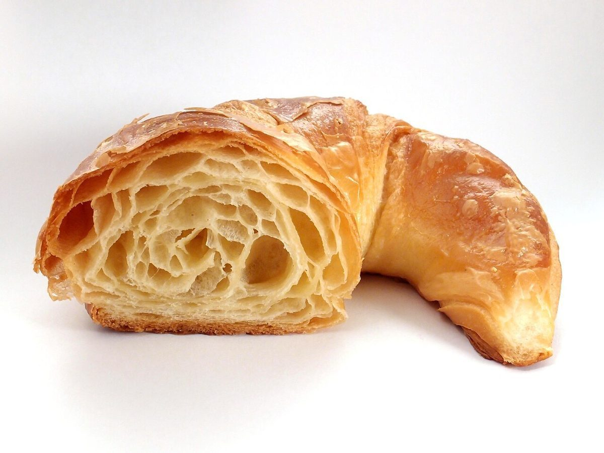
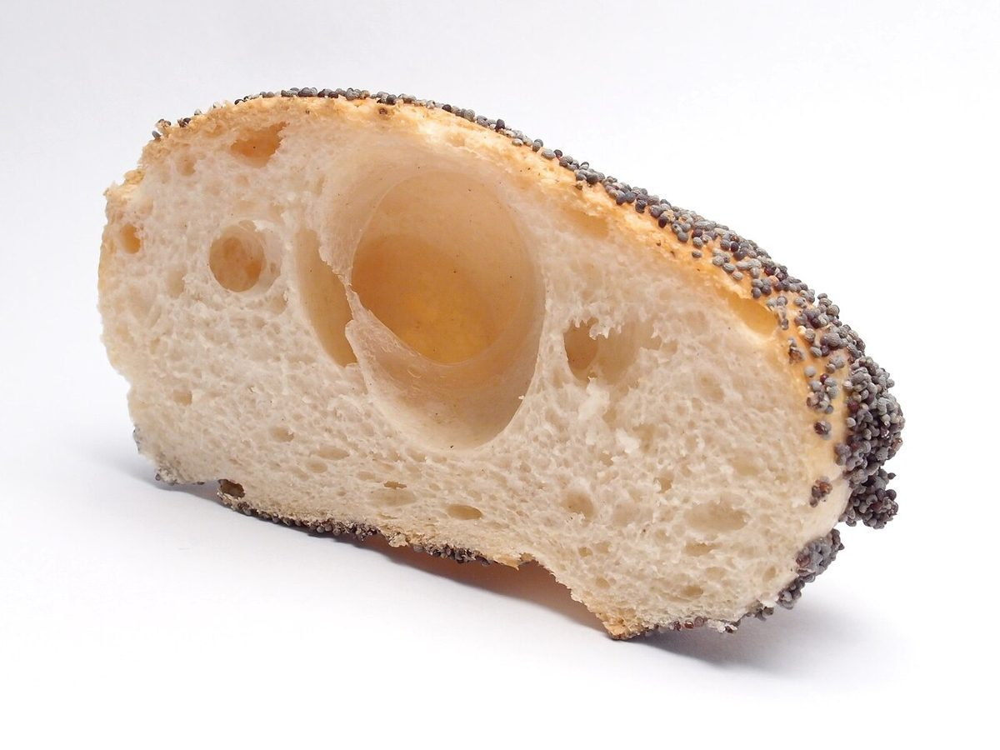
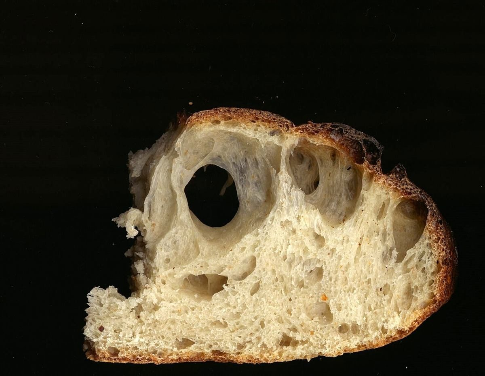
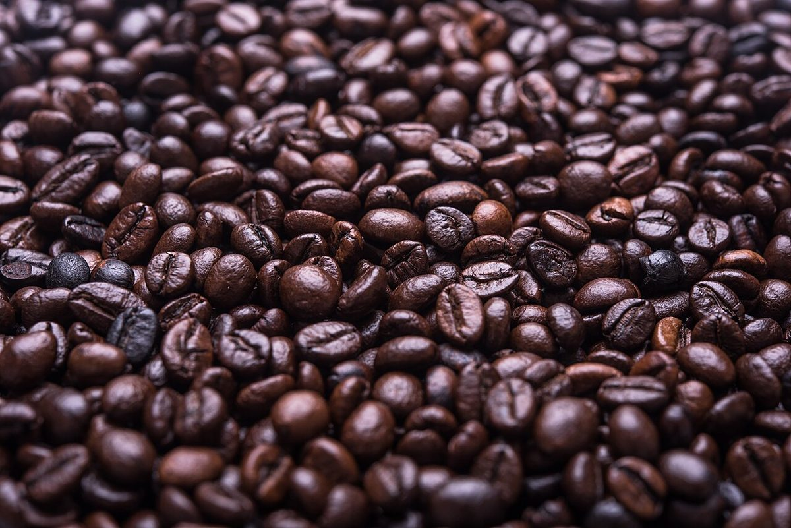

店のこと
店のこと
お店について確認できているのは、所在地・電話番号・Instagramのアカウントです。
確認できていること
- 店名は「カフェ ブージー」、業種はカフェ
- 所在地は〒519-4324 三重県熊野市井戸町341-5
- 電話番号は 0597-89-5051
- Instagramのアカウントは @cafe.bougie.iii
- 営業時間・定休日・メニュー・価格・ご予約・駐車場は準備中
見立ての説明
濁点がふたつ、「ー」もふたつ
お店の由来は分かりません。「ブージー」という四つの文字を、制作側は ブ(玉)・ー(糸)・ジ(玉)・ー(糸) と数えました。ページ上部の丸いボタンは、五つの玉です。いまいるページの玉だけ、色が変わります。制作側の連想で、お店の理念・由来とは無関係です。
下の写真はお店のものではなく、撮影地不明のフリー素材です。パンの断面とコーヒー豆の山をイメージとして並べています。



